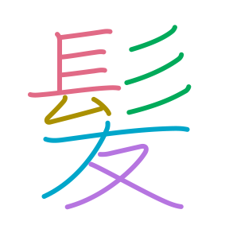
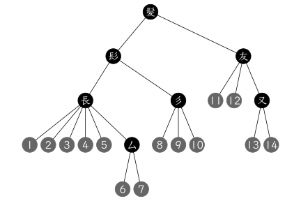
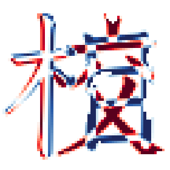
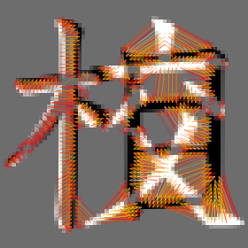

kanjistat offers tools for processing and analyzing Japanese kanji characters. You can look up readings and meanings along with further dictionary information (to a large part provided by KANJIDIC2) including morphological details. You can plot kanji in your favorite font and process the resulting bitmap. You can represent kanji as nested lists of stroke paths (based on original data by kanjiVG), plot components in different color or display the tree structure, and analyze these decompositions and their individual strokes. Various old and new distance functions between kanji are implemented.
|  |  |
|---|
|  |  |
|---|
Comments, suggestions and contributions are welcome! For more info, see the contribution guide.
Installation
Install directly from GitHub by saying in R
remotes::install_github("dschuhmacher/kanjistat")If you want to use the function kanjidist, you will have to install the GNU Linear Programming Kit (and the R package ROI.plugin.glpk). To work with precomputed kanjivec objects and the distance matrix used for the kanjidist website, download the R data package kanjistat.data via
remotes::install_github("dschuhmacher/kanjistat.data")Getting started
Kanji are represented in three different ways in this package:
as characters (or their Unicode codepoints) in the console.
as
kanjimatobjects, i.e., bitmaps using a certain font-family and possibly other typographical parameters.as
kanjivecobjects, i.e., nested lists of strokes given as paths. Recently these objects have become much more important than thekanjimatobjects.
See vignette("kanjistat") for the basics and ?kanjivec and ?kanjidist for more information on the third point. Alternatively, visit the pkgdown page at https://dschuhmacher.github.io/kanjistat/.
License
kanjistat is free software: you can redistribute it and/or modify it under the terms of the GNU General Public License as published by the Free Software Foundation, either version 3 of the License, or (at your option) any later version.
This package is distributed in the hope that it will be useful, but WITHOUT ANY WARRANTY; without even the implied warranty of MERCHANTABILITY or FITNESS FOR A PARTICULAR PURPOSE. See the GNU General Public License for more details.
A copy of the GNU General Public License is in the file LICENSE.md and at https://www.gnu.org/licenses/.
Attribution of prior work
The code in the file R/svgparser_lite is slightly altered from R packagesvgparser v0.1.2 — Copyright © 2021 mikefc@coolbutuseless.com
made available under an MIT License at
https://github.com/coolbutuseless/svgparser
The data sets kbase, kmorph and kreadmean are mostly derived from
KANJIDIC2 — Copyright © James William Breen and The Electronic Dictionary Research and Development Group (EDRDG)
made available under a CC BY-SA 4.0 License at
https://www.edrdg.org/wiki/index.php/KANJIDIC_Project
The variable components of data set kmorph is derived from
RADKFILE/KRADFILE — Copyright © James William Breen and The Electronic Dictionary Research and Development Group (EDRDG)
made available under a CC BY-SA 4.0 License at
https://www.edrdg.org/wiki/index.php/Main_Page
The variables jlpt, frank and idc of data sets kbase and kmorph are taken from
Kanjium — Copyright © Uros O. on any additions or modifications from previous sources
made available under a CC BY-SA 4.0 License at
https://github.com/mifunetoshiro/kanjium
The data set fivebetas is derived from five of the svg files in
KanjiVG — Copyright (C) 2009-2023 Ulrich Apel
made available under a CC BY-SA 3.0 License at
https://kanjivg.tagaini.net/085e4.svg and 090f5.svg (included for unit tests) are exact copies of files from the same source.
The sparse distance matrices dstrokedit and dyehli contain
the data from Lars Yencken’s PhD Thesis,
made available under a CC BY 3.0 Unported License at
https://lars.yencken.org/datasets/kanji-confusion